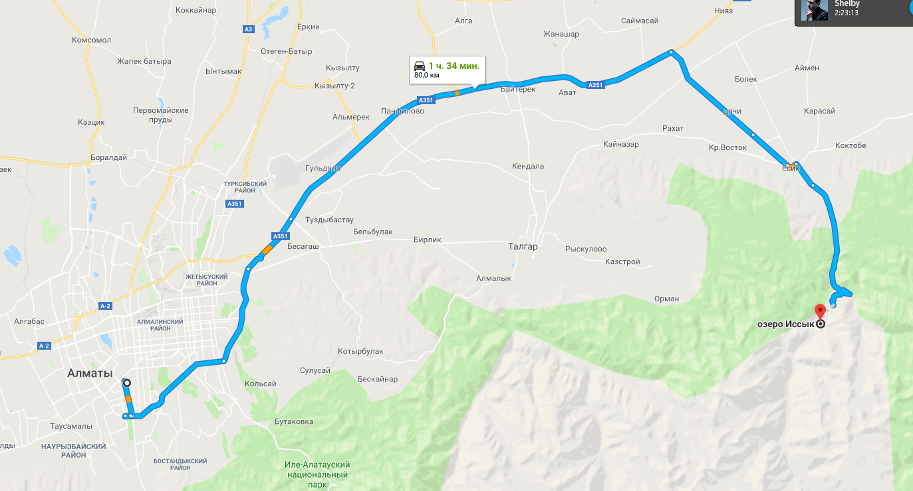

Озеро Иссык — озеро в Иссыкском ущелье Заилийского Алатау, примерно в 40 км восточнее Алма-Аты, на юго-западе Енбекшиказахского района Алматинской области Казахстана. Как утверждают геологи, образовалось оно примерно 8—10 тысяч лет назад в результате грандиозного горного обвала, который создал естественную плотину высотой около 300 метров. Изначально длина Иссыка составляла 1850 м, ширина 500 м, глубина 50—79 м. Вода была зелено-голубая, рыба не водилась. Высота над уровнем моря — 1714,5 м (1706,8 м, 1759 м).Происходит от казахского слова Есік — «дверь, узкое ущелье, теснина». Видоизменение произошло под влиянием названия одного из крупнейших озер Средней Азии, расположенного в 65 км южнее, Иссык-Куля.
Как добраться до озера Иссык. Озеро Иссык находится в 65 км от Алматы, и теперь здесь частенько проходят экскурсии и отдыхают местные. Чтобы добраться до озера на машине, нужно ехать по Кульджинскому тракту, повернуть через 35 км направо, в сторону города Иссык (Есик). Дальше просто едете по главной дороге через городок, до поворота направо. Там будет указатель на озеро. По пути встретится пост, где нужно будет заплатить 370 тг за человека — дальше начинается Иле-Алатауский природный парк. Еще 8 км вверх по долине (дорога вполне хорошая и проходима всеми) и вы на прекрасном озере! Я добирался на общественном транспорте, ну как и обычно ;-) С автовокзала «Саяхат» в Алмате буквально каждые 15-20 минут отходят автобусы до города Есик. Причем, автобусы немецкие, но такие старые…они переживают уже третье рождение, не меньше! Ехать около часа, может больше, останавливают у каждого стоящего на обочине человека. Городок Есик совсем небольшой — вы прибудете на автовокзал, который больше похож на оптовку. Дальше нужно идти своим ходом, на озеро общественный транспорт не ходит.
